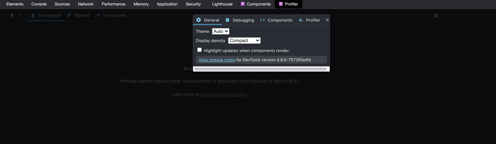

いつも再レンダリングを確認するときは Chrome の DevTool から Profiler 立ち上げて、'Highlight updates when components render.' のチェックを入れていたのですが、それやらなくても良いじゃんということに気づいたのでメモ。

import * as React from "react"
import { StateContext } from "./app"
export const Count = () => {
const context = React.useContext(StateContext)
const getColor = () => Math.floor(Math.random() * 255)
const style = {
color: `rgb(${getColor()},${getColor()},${getColor()})`,
}
return <div style={style}>count: {context.count}</div>
}
という風に コンポーネントの return より前の部分でランダムな色が当たるスタイルを作ってそれを div に食わせるだけで良い。
こういう感じに動く。
このやり方は https://leewarrick.com/blog/the-problem-with-context/ で見かけて良いなって思った。
あと似たようなのとして、コンポーネント自体に
@keyframes rendered {
0% {
background-color: rgb(255, 255, 0, 1);
}
100% {
background-color: rgb(255, 255, 0, 0);
}
}
div {
animation: rendered 1s ease;
animation-iteration-count: 1;
}
のようにアニメーションを与えても良い。
これは @uhyoさんのStable React でも observedBits を使いたい！ から拝借してきたコード。
uhyo さんのコードはこんな感じで動いていた。
注意事項としては、データが変わった時に確実に再レンダリングさせるためにコンポーネントに key を割り振るのを忘れないように。 preact + CSS in JS で実装し直すとこういう感じになる。
import { h } from "preact"
import { styled } from "goober"
const Component = (props: { cnt: number; className?: string }) => {
return (
<div className={props.className} key={props.cnt}>
<span>cnt: {props.cnt}</span>
</div>
)
}
const StyledComponent = styled(Component)`
@keyframes rendered {
0% {
background-color: rgb(255, 255, 0, 1);
}
100% {
background-color: rgb(255, 255, 0, 0);
}
}
span {
animation: rendered 1s ease;
animation-iteration-count: 1;
}
`
export const Count = StyledComponent
終わりに
profiler の再レンダリングの表示は境界が見え難かったり、どのコンポーネントが再レンダリングしているのかみたいな調査しにくかったり(インスペクタから分かるけど開くのがめんどくさい)したので、こういう方法も取り入れていきたい。 またこういうブログで再レンダリングについてを扱うときは、読者にプロファイラを要求せずに例を出せるのでこういうテクニックは嬉しい。 そして単純に実装できるこれを今まで自分で思い付けなかったのはちょっと悔しい。
サンプルコード
- 関数内で適当なランダムな色を持ったスタイルオブジェクトを作って渡す
- https://github.com/ojisan-toybox/store-context-outer
- CSS アニメーションと key 割り振りでアニメーションを発火させる
- https://github.com/ojisan-toybox/detect-rerender-animation